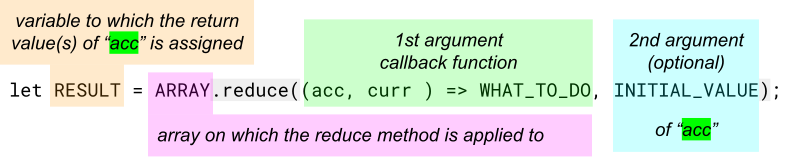

Array Methods
the "reduce" method
The .reduce() method executes a user-supplied "reducer" callback function on
each
element of the array, in order, passing in the return value from the calculation on the preceding element.
The final result of running the reducer across all elements of the array is a single value which can to be
assigned to a variable.
syntax rules
- the
.reduce()method takes 2 arguments and is used on arrays- the return statement has to return
acc - 1st argument:
- is a callback function with 2 parameters which can have any arbitrary name
- 1st parameter (usually called
acc) is the accumulated value- its value is the first element in the array if not set with another value through the 2nd argument (initial value)
- how the
accvalue is updated though thecurrvalue is specified in the callback function - it is possible to return an object of
accby defining multipleaccand setting the "initial value" to{}
- 2nd parameter (usually called
curr) is the current value- it starts with the value of the second element in the array if there is no 2nd argument (initial value), otherwise it is the 1st value of the element in the array
- every following element of the array will hold the place of
currin the callback function till the end is reached
- the return statement has to return
- 2nd argument (optional "initial value"):
- the value is used as initial value for the
accparameter and shifts the value of thecurrfrom the 2nd element to the 1st - it is good practice to always set an "initial value" even if it is just
0 - if the result should be an object of
accvalues than the "initial value" should be{}
- the value is used as initial value for the
examples
example: return object
// find the student with the highest 'english' score
let students = [
{
name: 'John',
subjects: ['maths', 'english', 'cad'],
teacher: {maths: 'Harry', english: 'Joan', cad: 'Paul'},
results: {maths: 90, english: 75, cad: 87},
},
{
name: 'Emily',
subjects: ['science', 'english', 'art'],
teacher: {science: 'Iris', english: 'Joan', art: 'Simon'},
results: {science: 93, english: 73, art: 95},
},
{
name: 'Adam',
subjects: ['science', 'maths', 'art'],
teacher: {science: 'Iris', maths: 'Harry', art: 'Simon'},
results: {science: 93, english: 88, maths: 97, art: 95},
},
{
name: 'Fran',
subjects: ['science', 'english', 'art'],
teacher: {science: 'Iris', english: 'Joan', art: 'Simon'},
results: {science: 93, english: 87, art: 95},
}
];
// reduced method version 1 on "student" array
const biggest = students.reduce((acc, curr) => {
let name = 'name';
let subject = 'max'
// if acc[name] dose not exist than create
if(!acc[name]){
// acc[name] and assign the "name" of the first element
acc[name] = curr.name;
// acc[subject] and assign the "results.english" of the first element
acc[subject] = curr.results.english;
// otherwise ....
} else {
// if acc[subject] is smaller then the next element(s)
if(acc[subject] < curr.results.english){
// assign (overwrite) acc[name] with the curr.name
acc[name] = curr.name;
// assign (overwrite) acc[subject] with the curr.results.english
acc[subject] = curr.results.english;
}
}
// return acc
return acc
},{});
console.log(biggest); // { name: 'Adam', max: 88 }
// reduced method version 2 on "student" array
const biggest_2 = students.reduce((acc, curr) => {
let name = 'name';
let subject = 'max'
if(acc[subject] < curr.results.english){
acc[name] = curr.name;
acc[subject] = curr.results.english;
}
return acc
},{name:'',max:0});
console.log(biggest_2); //{ name: 'Adam', max: 88 }
example: simple
const array1 = [1, 2, 3, 4]; // 0 + 1 + 2 + 3 + 4 const initialValue = 0; const sumWithInitial = array1.reduce( (previousValue, currentValue) => previousValue + currentValue, initialValue ); console.log(sumWithInitial); // expected output: 10